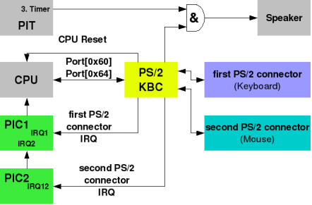
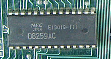
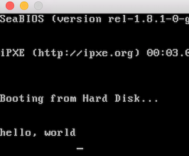
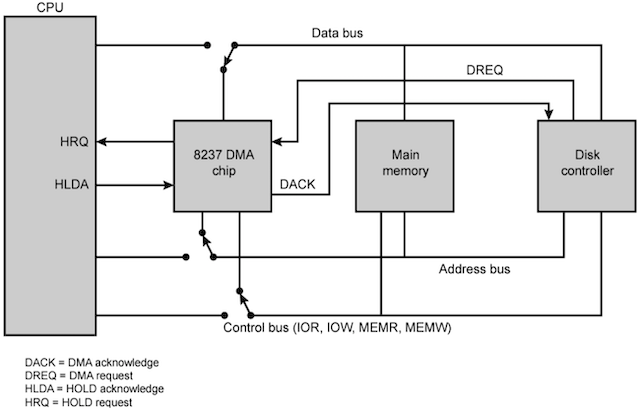
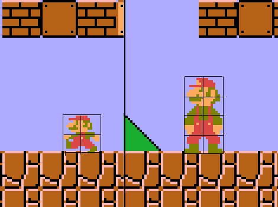
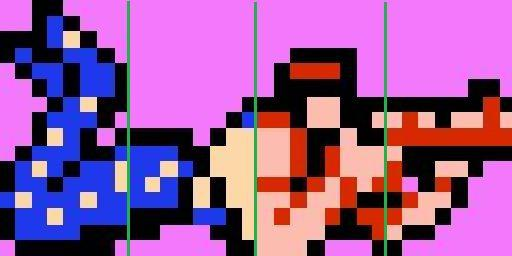
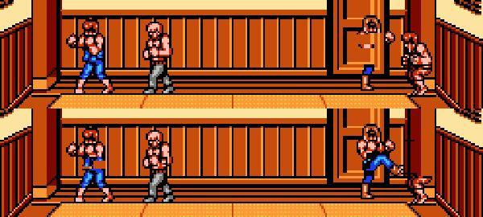
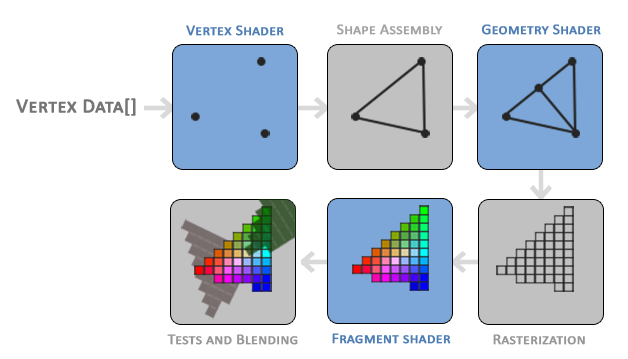

public: True class: center, middle # 输入/输出 蒋炎岩 <jyy@nju.edu.cn> 南京大学计算机软件研究所 --- # 概述 > 对所有学计算机的同学来说，“设备” 才是真正触摸到的，但设备到底是什么？ > > * AbstractMachine 中也包含 I/O 设备 ---- * I/O 设备概述 * 图形加速器 * NEMU 中的设备 --- class: center, middle # I/O 设备概述 --- # TRM: 访问 I/O 设备 > 只有一个 `putc()`。 那我们接到计算机上的键盘、鼠标、显示器……都是如何驱动的？ * .red[计算机硬件一定提供某些指令访问这些设备] ---- Memory-mapped I/O (MMIO) * 直观，使用普通内存读写指令就能访问 * 带来一些设计和实现的麻烦：编译器优化、乱序执行…… Port-mapped I/O (PMIO) * 有另一个类似于内存的地址空间 (ports)，老旧的计算机系统没有缓存/内存控制器， I/O 总线直接连接 CPU --- # 简单的例子 * .float-right[] Intel 8042 控制器 (PS/2 键盘/鼠标) * 控制/数据端口：0x64/0x60 * 在有事件后 `inb(0x60)` 读出按键的扫描码 (scan code) * Intel 8259 中断控制器 * .float-right[]CPU 只有一根中断线 (`cli/sti` 指令控制整个 CPU 的中断)，但有很多中断源 * 中断控制器可以管理多个中断线 (级联2片8259)、设置中断触发模式、屏蔽等 --- # 简单的例子 (VGA) .float-right[] VGA 有多个模式，结合了 MMIO 和 PMIO * MMIO：多种字符/图形模式 * PMIO：各类配置(光标位置、闪烁……) ---- 简化版 (nemu)：MMIO，像素就是一个.red[数组] (`uint32_t *pixels;`) * `W * H` 个像素，行优先方式存储 * `pixels[y * W + x] = color;` 实现绘制 --- # DMA 控制器 > I/O 设备的读写速度是非常.red[慢]的 (经常需要到低速总线去绕一圈)，传送大量数据 (传送磁盘/网络数据) 和 CPU 同步效率极低 Direct Memory Access：硬件实现的`memcpy` (内存-内存/设备) .center[] --- # 现代x86: APIC & PCI .center[<img src="../static/wiki/ics/2018/slides/img/iomap-64.png" width=600px/>] --- # 例子：LAPIC 完全用 C 代码管理设备 (TFM: ID = 8, TPR = 32, EOI = 44), so easy! ```c volatile unsigned int *lapic; static void lapicw(int index, int value) { lapic[index] = value; lapic[ID]; // wait for write to finish, by reading } // 读设备：获得当前CPU编号 int _cpu(void) { return lapic[ID] >> 24; } // 写设备：开启APIC中断 void lapic_eni() { lapicw(TPR, 0); } // 写设备：End-of-interrupt，后续响应中断 void lapic_eoi() { lapicw(EOI, 0); } ``` PCI 也类似 (此处省略数千页 FM)，硬件 Vendor 真是不容易…… --- class: center, middle # 更复杂的例子：图形加速器 --- # NES PPU NES 系统的 CPU 是6502 @ 1.79Mhz，IPC = 0.43 * 在 60FPS 下，每一帧必须在 13K 条指令内完成 * 屏幕共有 256 x 240 = 61K 像素 (256 色) * 但 NES 游戏都丝般顺滑？？？ -- count: false ---- 使用“图形加速硬件”，就是大家知道的显卡 * PPU (Picture Processing Unit) --- # PPU：图形描述绘制语言处理器 图形加速卡内部存储了 “如何绘制图形” 的数据 * .float-right[]一组 8 x 8 的 patterns (tiles)，每个像素用 2bits 描述 (背景/透明，颜色 2/3/4) * 8 个调色板 * 描述前景/背景用的数据表 ---- 图形加速卡加工数据、.red[输出像素] * 接受数据结构的更新指令 * 将数据结构的内容绘制到屏幕上 --- # Patterns and Palettes (ROM) `16 x 16 x 8 x 8 x 2bit = 4KiB` .center[] --- # 前景和背景 (RAM) 描述一个 8x8 的方格的绘制方法需要需要两个字节：#tile pattern, attributes： ``` 76543210 |||||||| ||||||++- Palette (仅使用sprite调色板4-7) of sprite |||+++--- Unimplemented ||+------ Priority (0: in front of bg; 1: behind bg) |+------- Flip sprite horizontally +-------- Flip sprite vertically ``` * 背景：一个 (#, A) 的二维数组 (两个屏幕大小)，可以选择其中任意位置显示 * 前景：64 个 (x, y, #, A)。受限于 PPU，每个扫描线只能显示 8 个 sprites --- # 在受限的硬件下做游戏：前景 [《魂斗罗》（Contra）中角色为什么要「萝莉式屈腿俯卧」？](https://www.zhihu.com/question/38528261) .center[] ---- 如果获得 16 个 sprites？ * (time division; 时分复用) 在一半的时间里显示一部分，另一半时间里显示另一部分 .center[] --- # 在受限的硬件下做游戏：背景卷轴 背景是一个大数组，可以指定其中一部分做“卷轴”效果 .center[] --- # 在受限的硬件下做游戏：背景动画 通过切换 tile pattern table 实现背景动画 * 同时更新屏幕上的所有 tiles * 难怪为什么有些 “次世代” 的游戏画面那么精良 * (其实是依靠更大的存储 .center[<img width="640px" src="../static/wiki/ics/2018/slides/img/nes-switch.gif"/>] --- # 访问 NES PPU 回顾：PPU 是一个状态机/数据结构；电路逻辑负责输出到屏幕 | 地址空间 | 大小 | 功能 | | ------------- | --------- | ------------------------------------------------------------ | | $0000-$1FFF | 2 x $1000 | [Pattern tables](https://wiki.nesdev.com/w/index.php/PPU_pattern_tables) | | $2000-$2FFF | 4 x $0400 | [Nametable](https://wiki.nesdev.com/w/index.php/PPU_nametables)s | | $3000-$3EFF | $0F00 | Mirrors of $2000-$2EFF | | $3F00-$3F1F | $0020 | [Palette RAM](https://wiki.nesdev.com/w/index.php/PPU_palettes) indexes | | $3F20-$3FFF | $00E0 | Mirrors of $3F00-$3F1F | | $S0000-$S000C | $40 | Sprite Y, #, attribute, X | <br/> CPU 通过内存映射的寄存器 `$2003` (`OAMADDR`), `$2004` (`OAMDATA`), `$4014` (`OAMDMA`) `$2006`, `$2007` (`PPUMEM`) 更改 PPU 的数据结构 * memory-mapped I/O --- # 现代图形加速卡 > 如果你希望设计一套标准，支持 2D/3D 图形应用/游戏，并能在各种 GPU 上高效实现，该怎么办？ -- count: false ---- 答案是类似的：维护一个**数据结构**，并定义数据结构**显示**的方式 OpenGL：Gemoetry + Shader .center[] --- # 状态机视角下的 GPU 之前提到，ICS 这门课最重要的 take-away message 就是 “计算机是个状态机” - CPU 寄存器/内存的.red[值]决定了它的状态 - 在时钟驱动下，CPU 根据自己的状态取出指令执行，改变状态 - GPU 也类似于 CPU，有自己的存储 (显存) 和指令集 ---- 所以 GPU 当然也能用来做.red[计算]了！ * 早在 NES 时代，GPU 的运算.red[速度]就远远超过 CPU (每秒绘制 60 次 256x240 的屏幕)，但不够.red[通用] (只能进行图形计算) * 之后出现了用 Shader 编程的思路 (GPGPU) * 今天的异构计算系统：CUDA, TVM, OpenCL, 神经网络处理器... --- # Hello, CUDA World ```c __global__ void hello(char *a, char *b) { a[threadIdx.x] += b[threadIdx.x]; } char a[N] = "Hello "; char b[N] = {15, 10, 6, 0, -11, 1}; cudaMalloc( (void**)&ad, N ); cudaMalloc( (void**)&bd, N ); cudaMemcpy( ad, a, N, cudaMemcpyHostToDevice ); cudaMemcpy( bd, b, N, cudaMemcpyHostToDevice ); printf("%s", a); // Hello dim3 dimBlock( blocksize, 1 ); dim3 dimGrid( 1, 1 ); hello<<<dimGrid, dimBlock>>>(ad, bd); // run on GPU cudaMemcpy( a, ad, N, cudaMemcpyDeviceToHost ); printf("%s\n", a); // World! ... ``` --- # 设备驱动程序 每个硬件生产厂商都有自己的硬件实现 (参考 NES PPU)，但如果让操作系统/窗口管理器等应用直接操作设备，代码就变得不可移植了 * 程序通常使用一套标准 API (OpenGL, Vulkan, Metal) * 设备驱动程序负责将 API 翻译成设备能理解的指令 ---- 一般的设备(磁盘、串口、...) * `read()`, `write()`, `open()`, `close()`, `ioctl()`就足够了 * 下学期会详细解释